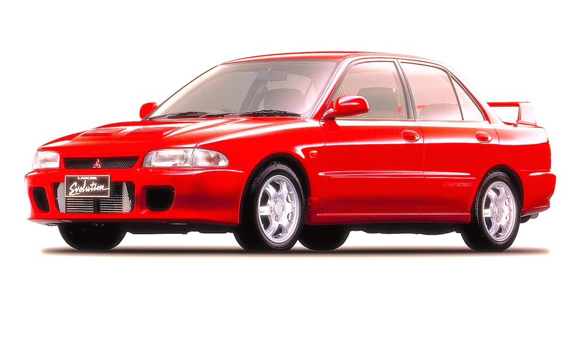
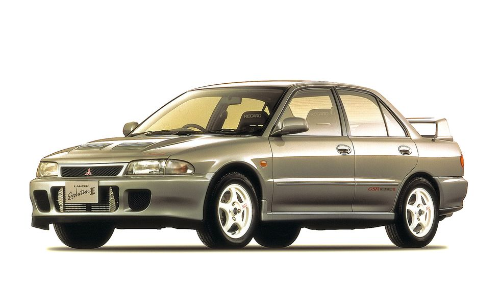
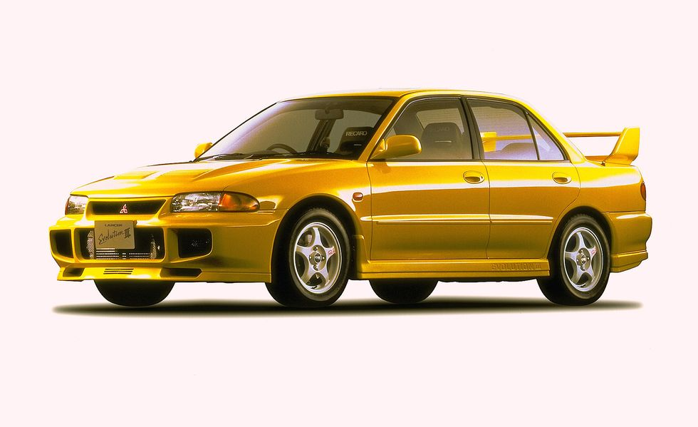
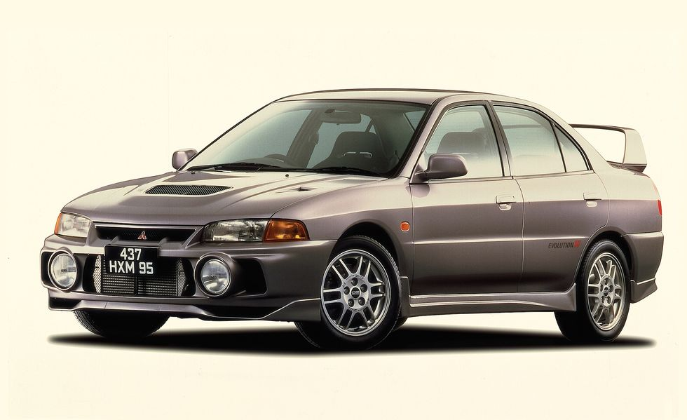
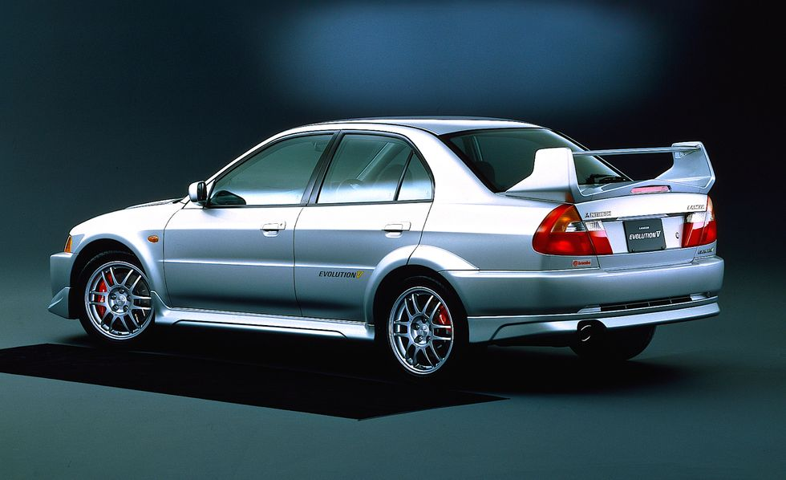
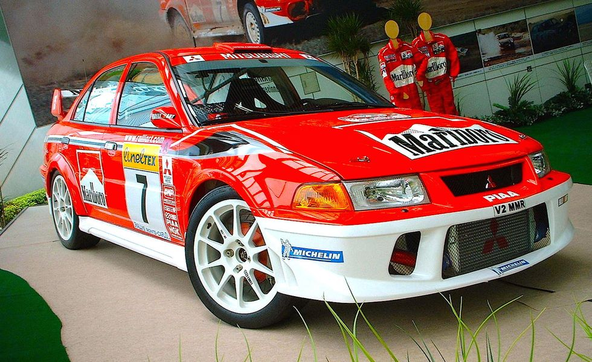
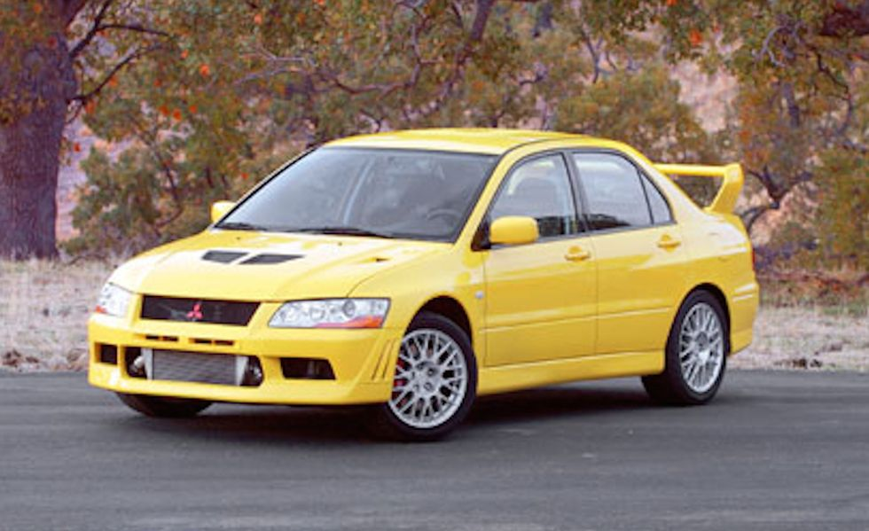
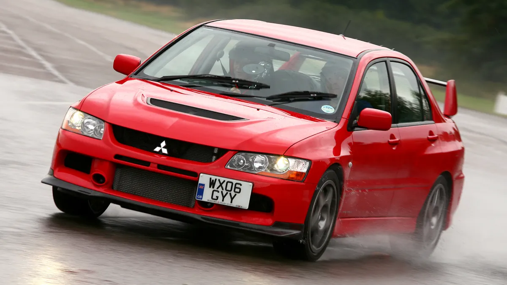

The Mitsubishi Lancer Evolution, often referred to as the Evo, is a high-performance sports sedan that gained a cult following for its rally-inspired driving dynamics and impressive performance capabilities. The Evolution series was produced by Mitsubishi from 1992 to 2016, with a total of ten generations released during its production run.

**Mitsubishi Lancer Evolution I (1992-1994)**:
The first-generation Evo was based on the Mitsubishi Lancer sedan platform and featured a turbocharged 2.0L inline-four engine producing 244 hp. It set the foundation for the Evo's rally-bred performance with all-wheel drive and advanced technology for its time.

**Mitsubishi Lancer Evolution II (1994-1995)**:
The Evolution II saw improvements in engine performance and handling, with a revised turbocharger boosting power to 256 hp. It also featured enhancements to the suspension and brakes for better driving dynamics.

**Mitsubishi Lancer Evolution III (1995-1996)**:
The Evolution III further refined the Evo's performance with a more advanced AWD system and aerodynamic enhancements. The engine output remained at 256 hp, but the chassis and handling were improved for sharper driving dynamics.
The Mitsubishi Lancer Evolution III introduced the Active Center Differential (ACD) system with an Anti-Lag feature. This technology was designed to reduce turbo lag and improve engine response for better performance, particularly in rally racing where quick throttle response is crucial.
The Anti-Lag system works By;
In simple terms, when the throttle is closed, the Anti-Lag system keeps the turbocharger spinning at high speeds by igniting the air and fuel mixture in the exhaust manifold before it reaches the turbocharger. This maintains boost pressure and reduces the time it takes for the turbo to spool up when the throttle is pressed again, effectively reducing turbo lag and providing instant power delivery.
While the Anti-Lag system is effective in improving throttle response and performance, it does have some drawbacks. The continuous combustion in the exhaust manifold can increase exhaust temperatures and place additional stress on engine components. Therefore, the Anti-Lag system is typically used sparingly and may require more frequent maintenance to ensure engine longevity.
Overall, the Active Center Differential with Anti-Lag system in the Mitsubishi Lancer Evolution III was a groundbreaking technology that showcased Mitsubishi's commitment to enhancing performance and responsiveness in rally racing and high-performance driving situations.
The Evolution III further refined the Evo's performance with a more advanced AWD system and aerodynamic enhancements. The engine output remained at 256 hp, but the chassis and handling were improved for sharper driving dynamics.
The Mitsubishi Lancer Evolution III introduced the Active Center Differential (ACD) system with an Anti-Lag feature. This technology was designed to reduce turbo lag and improve engine response for better performance, particularly in rally racing where quick throttle response is crucial.
The Anti-Lag system works By;
In simple terms, when the throttle is closed, the Anti-Lag system keeps the turbocharger spinning at high speeds by igniting the air and fuel mixture in the exhaust manifold before it reaches the turbocharger. This maintains boost pressure and reduces the time it takes for the turbo to spool up when the throttle is pressed again, effectively reducing turbo lag and providing instant power delivery.
While the Anti-Lag system is effective in improving throttle response and performance, it does have some drawbacks. The continuous combustion in the exhaust manifold can increase exhaust temperatures and place additional stress on engine components. Therefore, the Anti-Lag system is typically used sparingly and may require more frequent maintenance to ensure engine longevity.
Overall, the Active Center Differential with Anti-Lag system in the Mitsubishi Lancer Evolution III was a groundbreaking technology that showcased Mitsubishi's commitment to enhancing performance and responsiveness in rally racing and high-performance driving situations.
**Mitsubishi Lancer Evolution IV (1996-1998)**:

The Evolution IV marked a significant evolution in design and performance for the Evo series. It featured a new 4G63T engine with improvements to power output at 276 hp and introduced a more sophisticated AWD system. The Evo IV was renowned for its success in rally competitions.
5. **Mitsubishi Lancer Evolution V (1998-1999)**:

The Evolution V continued to refine the Evo's performance capabilities with enhancements to the engine, suspension, and body design. It featured a more aggressive exterior styling and improvements to the drivetrain for better handling and traction.
**Mitsubishi Lancer Evolution VI (1999-2001)**:

The Evo VI further solidified the Evo's reputation as a high-performance sports sedan. It introduced features like Active Yaw Control (AYC) for enhanced handling and stability, along with a revised engine producing 276 hp. The Evo VI was also successful in rallying.It also featured an anti lag system
**Mitsubishi Lancer Evolution VII (2001-2003)**:

The Evolution VII brought significant updates to the Evo series, including a more powerful engine with 280 hp and improvements to the chassis and suspension. It featured a distinctive front-end design and continued to be a favorite among performance enthusiasts.
**Mitsubishi Lancer Evolution VIII (2003-2005)**:
The Evo VIII represented a leap in performance with a revised 4G63 engine producing 271 hp and enhancements to the suspension and aerodynamics. It featured a more aggressive exterior styling and was known for its impressive acceleration and handling.
**Mitsubishi Lancer Evolution IX (2005-2007)**:

The Evolution IX continued the Evo's legacy of performance excellence with a more refined engine producing 287 hp and improvements to the suspension and AWD system. It featured a redesigned front grille and bumper for a more aggressive look.
**Mitsubishi Lancer Evolution X (2007-2016)**:
The Evolution X marked a departure from its predecessors with a new platform and design. It featured a 4B11T engine producing 291 hp and introduced advanced features like Super All-Wheel Control (S-AWC) for superior handling and performance. The Evo X was the final generation of the Evolution series before Mitsubishi discontinued production in 2016.
These ten generations of the Mitsubishi Lancer Evolution showcased the evolution of performance technology and driving dynamics over the course of its production run. Each generation built upon the success of its predecessor, further solidifying the Evo's reputation as a high-performance icon in the automotive world.
:::RALLY HISTORY:::
The Mitsubishi Lancer Evolution, also known as the Evo, is a high-performance sports sedan that has a rich rally and racing history. The Evolution series was originally developed by Mitsubishi to compete in the World Rally Championship (WRC) and other rally competitions.
The Evolution first made its debut in 1992 with the release of the Mitsubishi Lancer Evolution I. It was based on the standard Lancer sedan but was heavily modified for rally racing.. The Evolution I was equipped with a turbocharged 2.0-liter engine, all-wheel drive system, and advanced suspension components, making it a formidable competitor in rally events..
Over the years, Mitsubishi continued to refine and improve the Evolution series, releasing new models with more advanced technology and performance capabilities. . The Evolution II, III, IV, V, VI, VII, VIII, IX, and X each brought new innovations and enhancements to the Evo lineup, solidifying its reputation as a top contender in rally racing..
TOMMI MAKINNEN
One of the most iconic moments in the Evo's rally history came in the late 1990s and early 2000s when Finnish driver Tommi Mäkinen piloted the Mitsubishi Lancer Evolution to four consecutive WRC driver's championships from 1996 to 1999. Mäkinen's success brought worldwide attention to the Evo and cemented its legacy as a dominant force in the world of rally racing.
In addition to its success in rally competition, the Lancer Evolution also found success in other forms of motorsport, including time attack events, hill climbs, and circuit racing. The Evo's advanced technology, responsive handling, and potent performance made it a favorite among racing enthusiasts and professional drivers alike.
Despite its impressive racing pedigree, Mitsubishi officially ended production of the Lancer Evolution in 2015 with the release of the Evo X Final Edition. The decision to discontinue the Evo was met with disappointment from fans and enthusiasts, signaling the end of an era for one of the most iconic sports sedans in automotive history.
Today, the Mitsubishi Lancer Evolution continues to have a dedicated fan base, with many owners and enthusiasts preserving and modifying these legendary cars for both street and track use. The Evo's legacy as a rally and racing icon lives on through its storied history and enduring popularity in the automotive community.